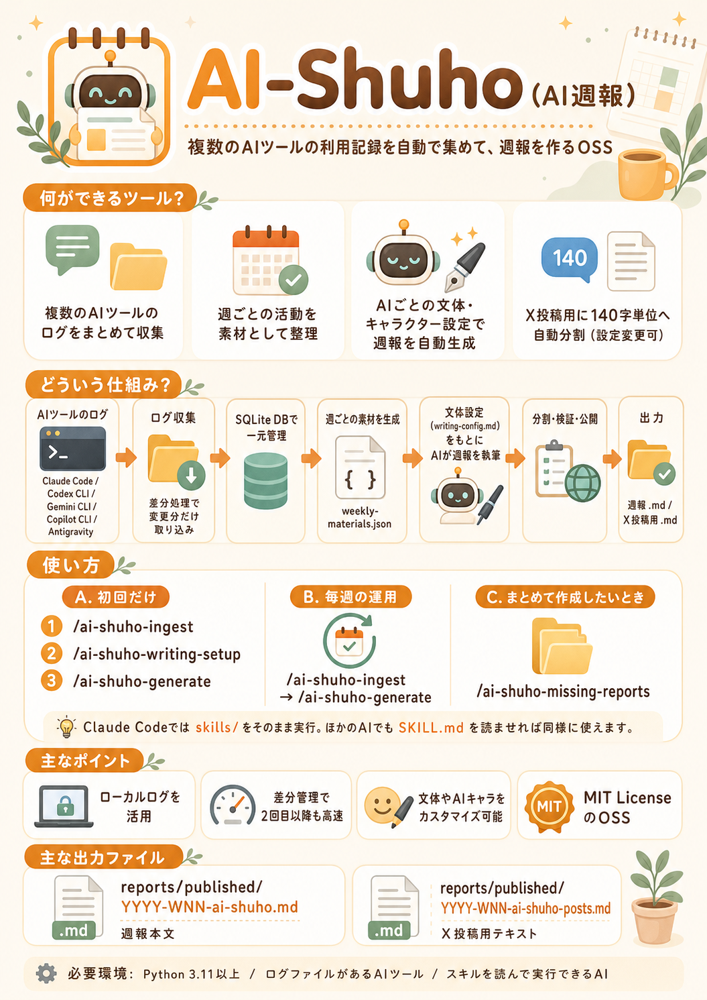

これは何か
Claude Code、Cursor、Gemini CLI、Aiderといった複数のAIコーディングツールの実行履歴やログを統合し、1週間分の活動をまとめた「週報」をAIが自動で執筆するための支援フレームワークです。Node.jsとSQLite、そしてLLMを活用して動作します。
何ができるか
ローカルに散らばった各AIツールのログファイルをスキャンし、重複を排除してデータベースに集計します。集計された活動ログを元に、AIがその週の主要な成果、課題、学びなどを構造化されたMarkdown形式で生成します。出力される週報の文体やキャラクター設定もカスタマイズ可能です。
目立つポイント
複数のツールにまたがる断片的なログを、時系列に沿って「一つの物語（週報）」へと編み上げる自動化フローが強力です。また、システム構成が明確に分離されており、ログソースの追加や執筆AIのプロンプト調整が容易な設計になっています。
セットアップや使い方の流れ
リポジトリをクローンし、npm installを実行します。config/log-sources.local.jsonを編集して解析対象のログパスを指定し、config/writing-config.mdで好みの文体を設定します。node scripts/generate-weekly.jsを実行することで、データベースへの取り込みから週報の草案生成までが一気通貫で行われます。
どんな人向けか
日々の開発で複数のAIツールをヘビーに活用しており、活動内容の振り返りやアウトプットを効率化したいエンジニア。自分の活動記録をAIに客観的に分析してもらい、ナレッジとして蓄積したい個人開発者。
注意点
解析対象となるログファイルが各ツールから出力されている必要があります。また、週報生成には外部LLM（API）の利用が必要なため、APIキーの設定が必要です。プライベートな情報が含まれるログを扱う際は、AIに渡すデータの範囲に注意してください。
まとめ
AI-Shuhoは、「AIに働かせる」だけでなく「AIとの協業を記録する」ことに焦点を当てたユニークなツールです。埋もれがちな日々の試行錯誤を価値あるナレッジへと変換し、開発ライフサイクルの可視化を強力にサポートしてくれます。
参考画像
